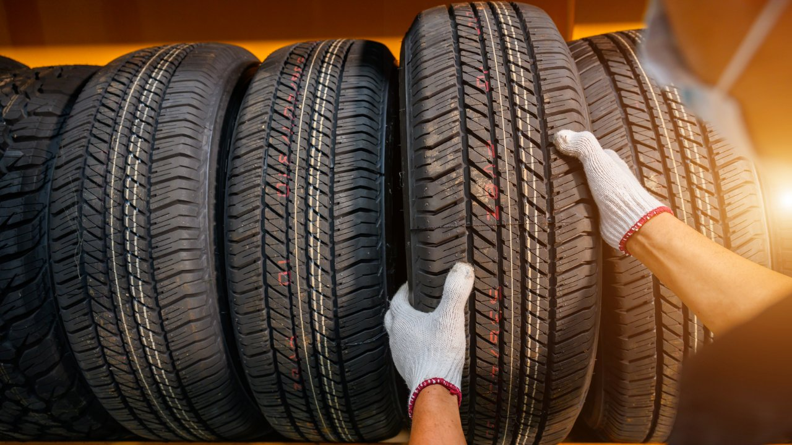

Home / Blog / In-House Retread Shop Layout
IN-HOUSE RETREADINGHow to lay out an in-house retread shop around the path a casing takes: station order, the curing bottleneck, separating dust, solvent and clean zones, staging buffers, tracking, and room to grow, from published plant examples.
Published November 18, 2026 · Good Hope Retreaders

Once a fleet decides to retread in-house and works out how big the line should be, the next question is where everything goes. It's easy to treat layout as an afterthought: put the machines wherever they fit. But a retread shop is a sequence. Every casing visits the same stations in the same order, so the floor plan decides how far tires travel, where they wait, and how much a shift can finish.
Here's how to think about a layout, using what's been published about real retread plants.
Published descriptions of the process agree on the order. A patent application describing how to track tires through a retread plant lists the stations as initial inspection, buffing, repair, tread building, enveloping and chamber loading, followed by curing and the steps after it. Continental's description of its own retread process starts with initial inspection to decide whether a casing can be retreaded. It ends with curing and a final inspection.
So a typical precure shop runs:
The first layout rule follows directly. Put the stations in that order on the floor, so a casing only ever moves forward. A straight line or a U shape both work. The U puts receiving and shipping near the same door.
Few retreaders publish their floor plans, but Modern Tire Dealer's 2008 profile of Belle Tire's retread plant in Allen Park, Michigan, gives a useful look at how one operator approached it. Staff looked at 18 different plant configurations before choosing one. The goal was to move casings through the process with minimal wasted movement or time.
A few details from that plant are worth copying at any scale:
Most fleet lines will be far smaller. But the method carries over. Sketch several layouts before you commit, build in space for the next station, and measure how long casings take to get through.
Not every station takes the same time. Tire Review's walk-through of one major retread system's process notes that curing takes up much of the production time, with the other stations totalling about 45 minutes. Fleet Equipment's tour of that system's training centre describes the full process as taking five to six hours.
That has two consequences for layout. First, the chamber area needs the most space: room to load and unload, rims and envelopes staged within reach, and space for the next batch of built tires to wait. Second, keep a small buffer of built, enveloped tires just ahead of the chamber, so it never waits for the front of the line. If the chamber sits idle, the whole shop's output drops. Our curing chamber guide covers chamber options.
Put final inspection right at the chamber exit. Trade sources recommend inspecting tires hot, straight out of the cure, because flaws in the liner, casing and repairs show up most clearly then. We covered that in Final Inspection After Curing.
A retread shop has three kinds of work that shouldn't share air:
In practice: buffing at the "dirty" end near receiving, building and enveloping at the "clean" end near the chamber, and the spray booth (if any) as a separate, ventilated space in between.
Every station needs somewhere for casings to wait. Plan racks before and after each one, not just floor space. Timing matters here too. The same cementless-process patent says cushion gum should go onto an uncemented casing within eight hours of buffing, or within 72 hours if the buffed casing is covered with poly. That's one patented process, not a universal rule. But it shows why you shouldn't let a big pile of buffed casings build up between buffing and building. Size the racks between those stations for a few hours of work, not a few days.
Casing storage before the line has its own requirements. We covered them in Casing Storage Before Retreading. Tread rubber and cushion gum storage are covered in our storage guide.
A major manufacturer's virtual tour of one of its retread plants notes that every casing is barcoded, so its owner can follow each step. An in-house line can do the same with simple barcode labels and a spreadsheet or shop software. Record the casing ID, the date in, each station's sign-off, the cure record and the final-inspection result.
When you own the line, that record is how you see where tires wait, which stations slow the shop down, and how your casing salvage rate is trending. It's also the history you need when you own your casings through multiple retreads.
Pulling it together, here's what we suggest checking on any draft floor plan:
When a fleet sends casings to an outside retreader, plant layout is that retreader's problem, and the fleet takes whatever turnaround the plant can manage. When the fleet runs its own line, layout is one of the few things it decides once and lives with for years. A plan that keeps casings moving and the chamber busy is how an in-house line delivers the cost and turnaround advantages that made it worth building. We looked at those economics in Fleet Retreading ROI.
Good Hope doesn't run retread shops for customers. We equip fleets to run their own, and keep them supplied afterwards. That covers the machinery for every station, the consumables, the components and the repair tools, along with guidance on initial setup. Everything is manufacturer-direct with local Ontario service, and every quote is one transparent, all-in Canadian price.
Send us your building dimensions, casing sizes and target daily volume. We'll suggest an equipment list that fits the space and quote it, with the consumables to keep it running: one transparent, all-in Canadian price, with local Ontario service.
Get an equipment quote →Send us your requirements and we'll get back to you within 24 hours with pricing and lead times — no obligation.